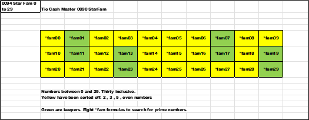

Here are all *wildcard numbers for *1 , *3 , *7 , *9 between 1 and 29 , with cells marked in yellow that can be eliminated due to division be 3.
This will create a subset of the *wildcard numbers *1 , *3 , *7 , *9. This will create *fam01 , *fam07 , *fam11 , *fam13 , *fam17 , *fam 19 , *fam23 , and *fam29.
Here are the *1 , * 3 , *7 , *9 numbers with the two-thirds of the numbers color coded green to keep. These are sub-sets of *wildcard and the target of sorting for primes.
The value associated with the *fam name is the last two digits.
Ex: *fam07 = 7
Here are all the *fam between 0 and 29 inclusive. This makes a group of thirty families. The yellow *fam have been eliminated by sorting rules from above.
The eight greens are the focus of the search.
